🔖原文信息（编者中文重排）
📚 文献信息
▪ Durall CJ. Therapeutic Exercise for Athletes With Nonspecific Neck Pain: A Current Concepts Review. Sports Health. 2012;4(4):293-301.
▪ 作者来自美国威斯康星大学拉克罗斯分校学生健康中心物理治疗部
▪ 现代概念综述（证据等级以 IV、V 级为主）；DOI：10.1177/1941738112446138
说到运动员的颈部，大家第一反应是骨折、脊髓损伤这些严重情况。但更常见的其实是普通的韧带扭伤、肌肉拉伤、软组织挫伤，也就是“非特异性颈痛”。比如自行车运动员，长时间低头抬眼骑车，颈痛发生率相当高，却很少被统计进运动损伤里。
这类颈痛的人，往往不只是“疼”，还会有六类功能缺陷：颈胸段活动度差、深层肌募集差、肌耐力和力量差、头颈位置觉差、平衡差、眼动控制差。这篇综述的思路很清楚：不按运动项目分，而是按缺陷找练法，最后给出一个三阶段方案。
需要先说明：作者自己也承认，目前专门针对运动员的随机对照试验很少，具体动作推荐大多来自经验或低等级证据。所以这篇更像一本“工具箱”，怎么组合要靠临床判断。
自我牵伸能短期减轻颈痛——有研究发现，每周 5 次自我牵伸，效果和每周 2 次手法治疗差不多。常拉的几块：斜角肌、上斜方肌、肩胛提肌、胸小肌、胸大肌。
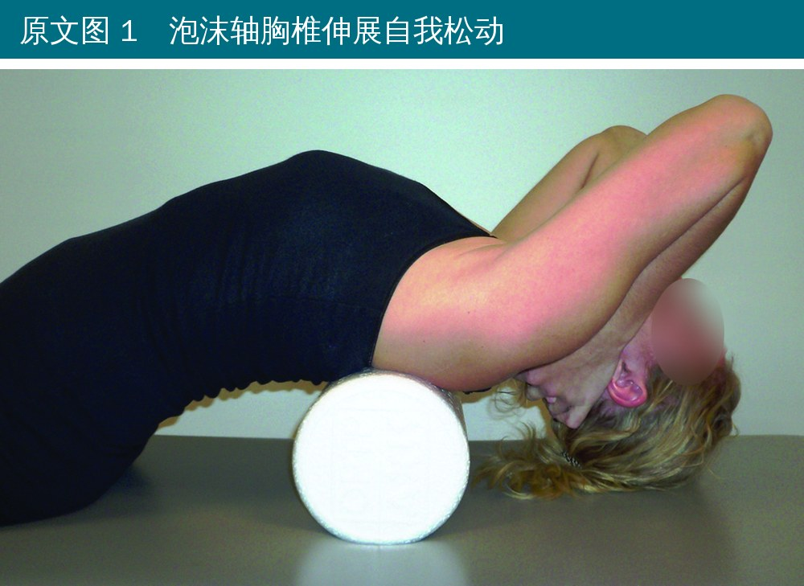
🔖原文图 1 泡沫轴胸椎伸展自我松动
胸椎后凸大的运动员，可以躺在泡沫轴上做胸椎伸展，把泡沫轴当支点，让伸展集中在某一节。
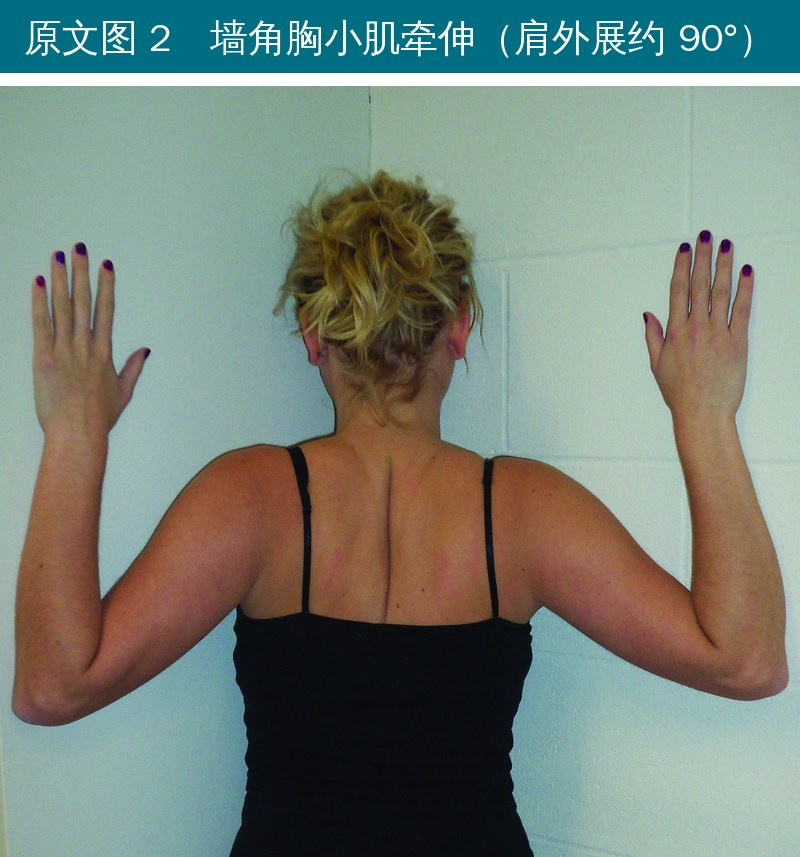
🔖原文图 2 墙角胸小肌牵伸
肩外展约 90° 的墙角牵伸能有效拉长胸小肌，胸小肌松了，胸椎后凸也可能减少。
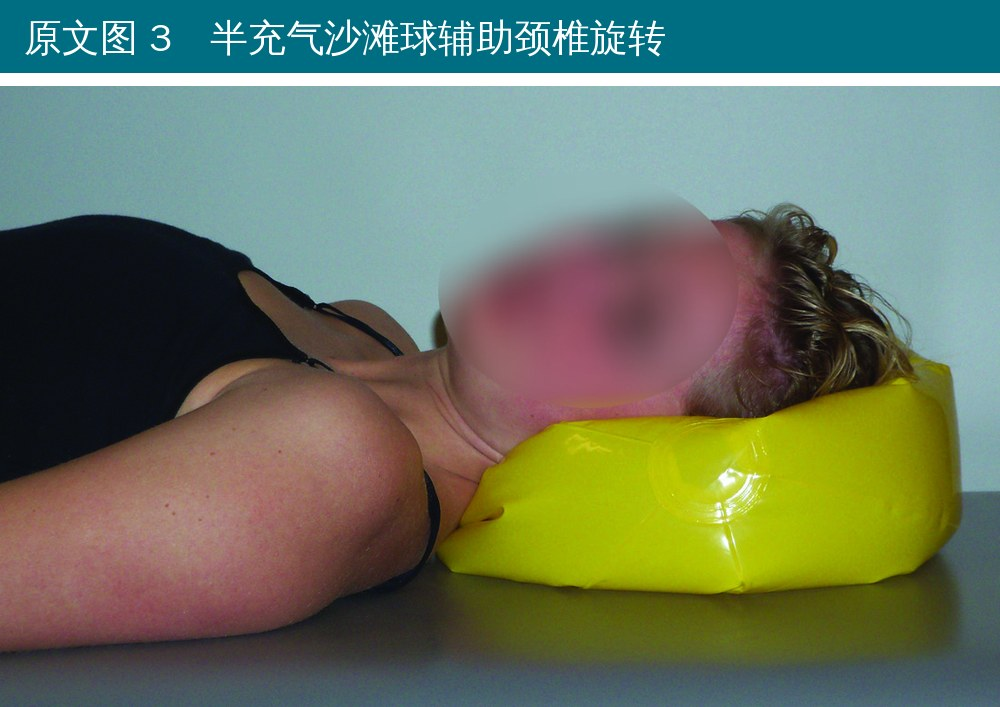
🔖原文图 3 沙滩球辅助颈椎旋转
颈椎旋转受限的，可以仰卧枕在半充气的沙滩球上做主动或主动辅助旋转。再进一步，用一根 1.3～2.5 cm 宽的布带或尼龙带勾住对侧关节突，转头的同时往前拉，给受限节段一个推力。
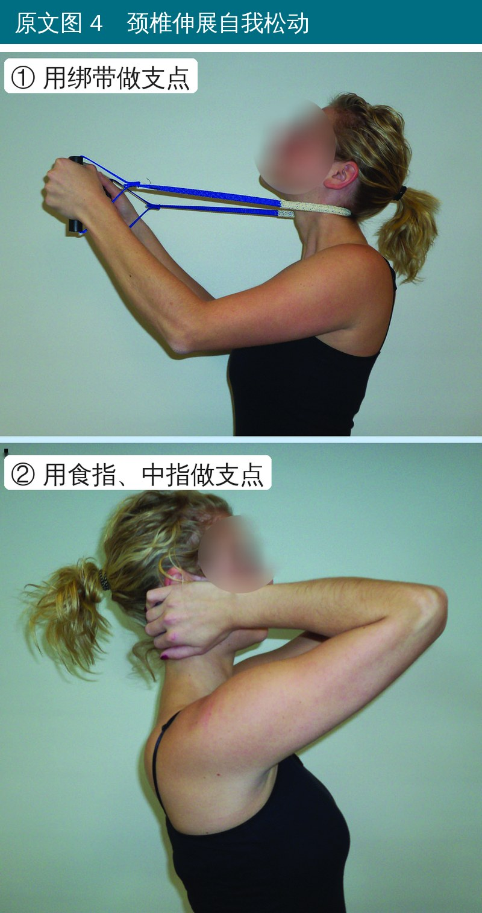
🔖原文图 4 颈椎伸展自我松动
伸展受限时，用绑带、枕套或毛巾在某一节下方做支点（①）；或者用食指、中指当一个“会跟着动的支点”（②），把伸展集中到受限的那一节。
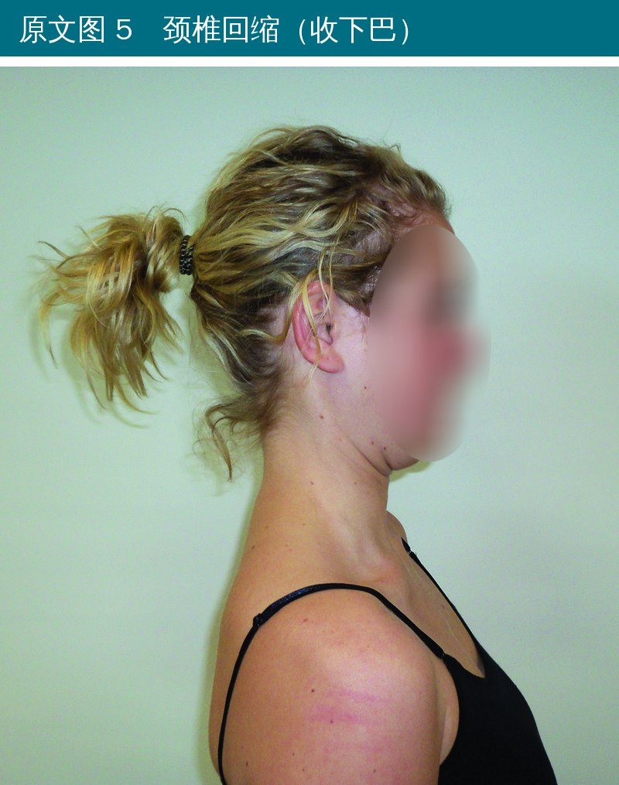
🔖原文图 5 颈椎回缩（收下巴）
• 手臂有放射症状的：可以试神经滑动，以及 McKenzie 的方向特异性重复运动——找让症状从远端往近端退（向心化）的方向。颈椎向心化的比例大约 15%
• 单纯颈痛的：颈椎回缩（头往后平移、眼睛保持水平）能减少下颈段的前向剪切、增加上颈段屈曲，还能激活深层屈肌和伸肌
• 头前伸姿势的运动员（比如自行车）尤其适合
颈痛一出现，颈部肌肉的功能就可能很快出问题，而且疼痛消失了，肌肉的问题还可能还在。颈椎大约 80% 的机械稳定性来自肌肉，所以这一步很关键。
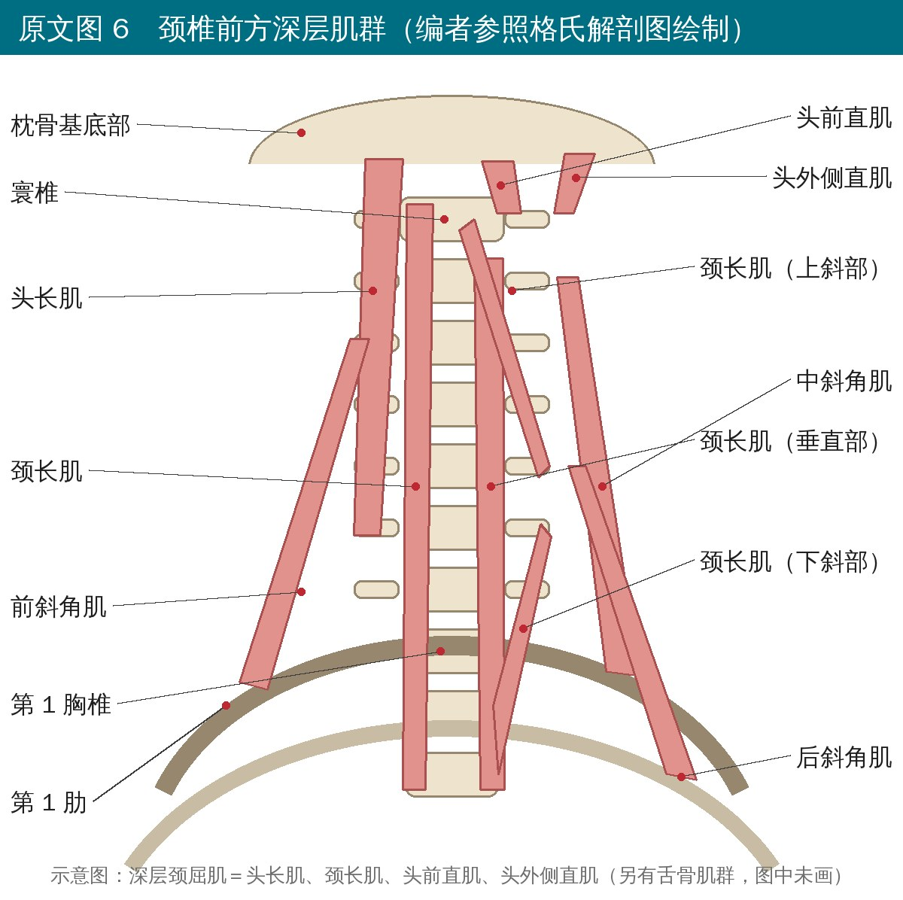
🔖原文图 6 颈椎前方深层肌群（编者绘制的示意图）
深层颈屈肌包括头长肌、颈长肌、头前直肌、头外侧直肌和舌骨肌群；深层颈伸肌包括颈半棘肌、多裂肌、头后大小直肌。建议先做标准化测试，找到具体哪里有缺陷。
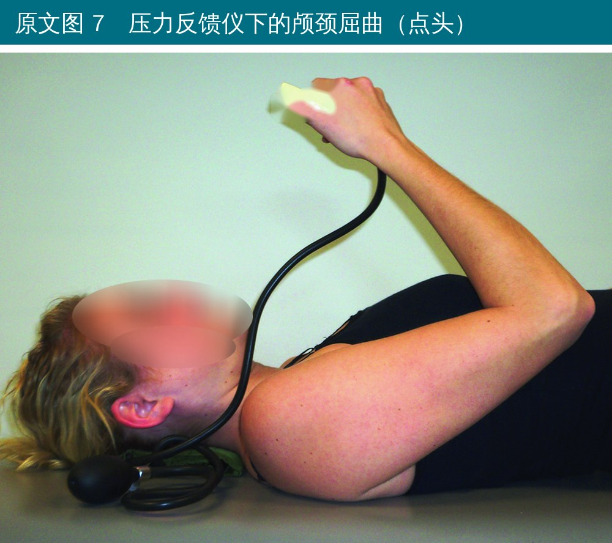
🔖原文图 7 压力反馈仪下的颅颈屈曲
• 仰卧，把压力反馈仪（血压计袖带也行）放在枕骨下方、上颈椎和床之间，充气到 20 mmHg
• 从中立位开始，像说“是”一样慢慢、轻轻地点头，颈椎前凸变平，压力随之上升
• 全程胸锁乳突肌要放松，治疗师在旁边盯着；如果颈阔肌或舌骨肌也来帮忙，让病人舌尖抵上颚、嘴唇闭、牙齿微张
• 能控制和改变压力后，练习保持更高的压力，目标是30 mmHg 坚持 10 秒，胸锁乳突肌几乎不参与
• 要点：用力要小，重点是精确控制，这本身也能改善位置觉
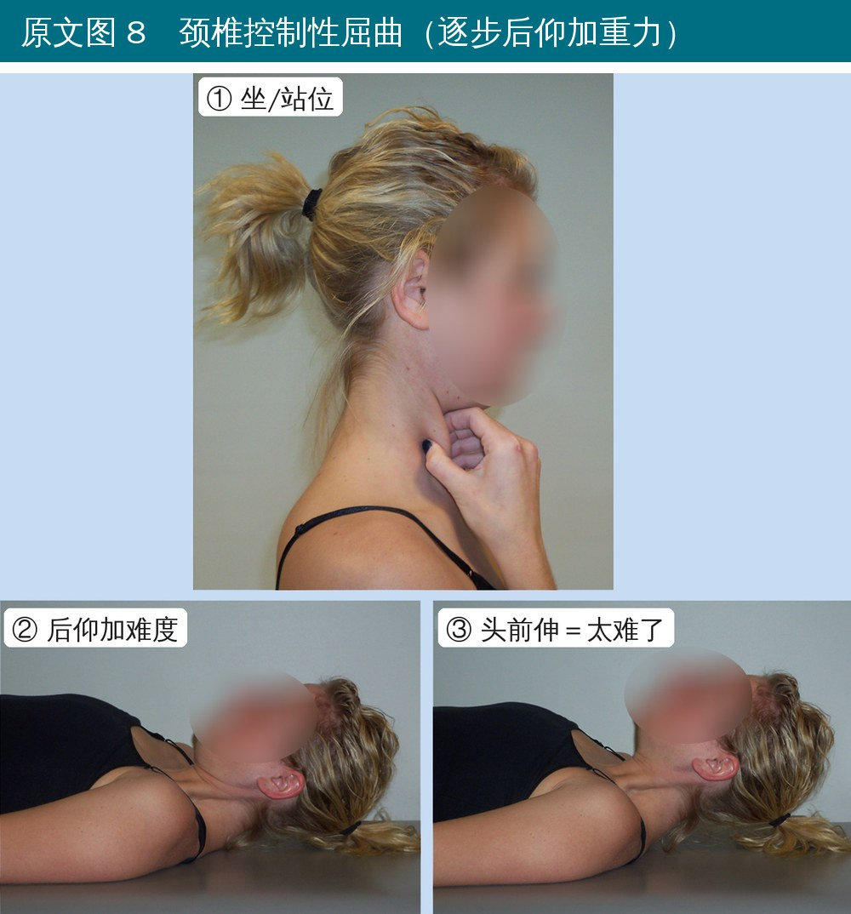
🔖原文图 8 颈椎控制性屈曲
仰卧点头做好了，就换成坐位或站立点头（①），手摸着胸锁乳突肌防止它过度用力。然后一点点往后仰（②），重力阻力越来越大，但必须始终保持上颈段屈曲。如果撑不住、头往前伸了（③），说明这个角度太难，要退一步。
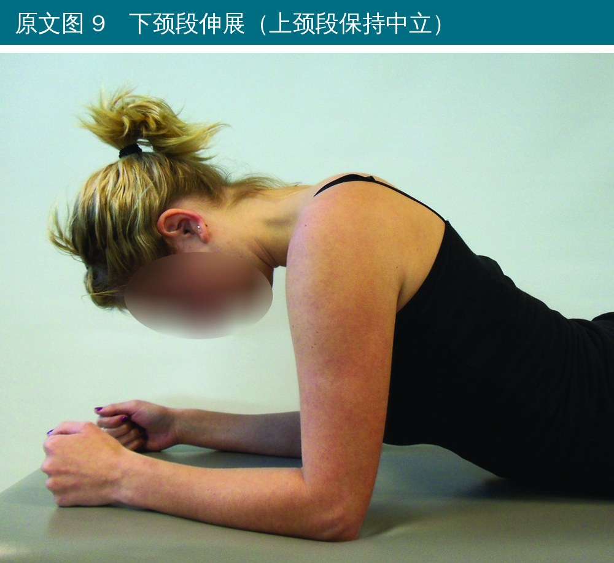
🔖原文图 9 下颈段伸展
四点跪、俯卧撑肘或坐位，下颈段慢慢离心屈曲再慢慢伸回来，头和上颈段保持中立（不点头也不仰头）。
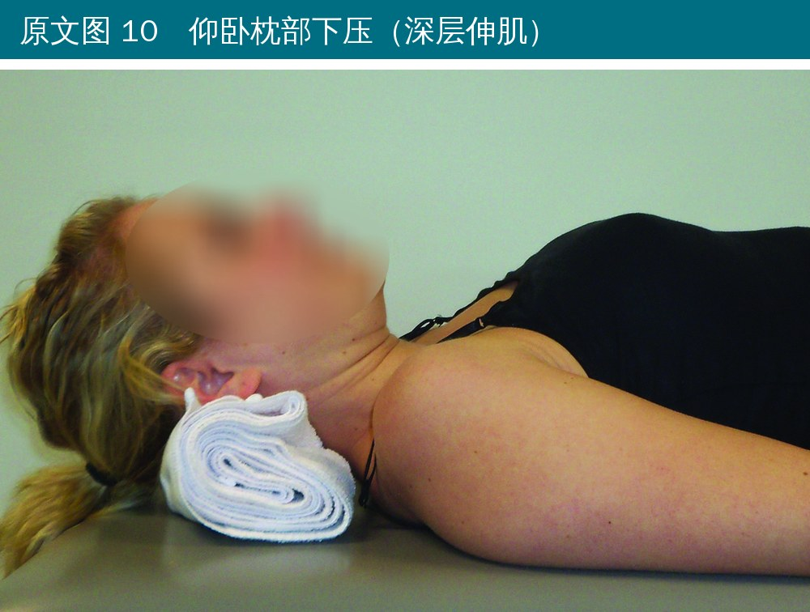
🔖原文图 10 仰卧枕部下压
仰卧，把后脑勺慢慢轻轻压进小枕头、毛巾卷或半充气沙滩球，同时不让颅颈屈曲。
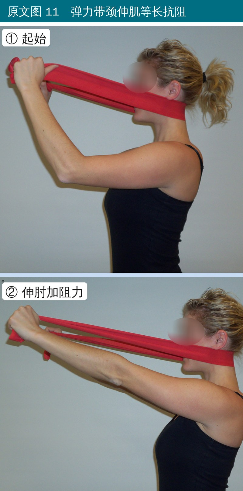
🔖原文图 11 弹力带颈伸肌等长抗阻
坐或站，弹力带绕在颈后（①），慢慢伸直手肘（②），给颈伸肌逐渐增加的等长阻力，全程保持颅颈中立。把弹力带换个方向绑在柱子上，就能练屈肌或侧屈肌：往前走练屈肌、往后走练伸肌、往侧走练侧屈肌。
强度上，深层颈肌建议用约 20% 最大自主收缩的低阻力，减少浅层肌代偿；低阻力训练的即刻镇痛效果也比高阻力好。超过疼痛阈值练，会打乱神经肌肉控制、放大反射性疼痛抑制。所以疼痛和激惹性高、或深层肌募集差的运动员，先用低强度。
深层肌募集问题解决后，再开始耐力和力量训练，两者都能减轻颈痛。怎么选？
• 低负荷耐力：激惹性低到中等的、怕加重的，或者耐力项目运动员（如自行车）
• 高阻力力量：需要大量肌肉稳定和力量缓冲的项目，如摔跤、美式橄榄球
• 女性运动员：颈屈肌、伸肌即使按体型校正后，也分别比男性弱约 30% 和 20%，力量训练可能特别有用
• 剂量：大部分力量增长来自第 1 组；有研究发现颈痛病人做 1 组和 5 组，3 个月后疼痛、功能、力量和耐力都没差别。美国运动医学会推荐每个动作 1 组、做到力竭
• 强度、次数、频率要“滴定”：激惹性高的只能耐受很短、很轻、小范围的练习；激惹性中低的可以练更长更重
别忘了斜方肌：颈痛的人斜方肌无力很常见，下面是肌电激活高的动作清单——
原文表 1 斜方肌肌电激活高的动作
| 部位 | 动作 |
|---|---|
| 上斜方肌 | 俯卧划船；军事推举；“T”字（肩中立或外旋）；耸肩；侧平举；直立划船 |
| 中斜方肌 | 俯卧肩后伸；俯卧划船；侧卧肩外旋；侧卧肩前屈；“T”字（肩中立或外旋） |
| 下斜方肌 | 肩外展；0° 外展位双侧肩外旋；站/坐位或侧卧肩前屈；俯卧 90° 外展位肩外旋；俯卧划船；侧卧肩外旋；“T”字 + 肩外旋；“Y”字 |
“T”字＝俯卧从 90° 外展开始水平外展；“Y”字＝俯卧从约 120° 外展开始水平外展。
慢性或反复颈痛的人，颈部机械感受器传入出了问题，容易出现头颈复位不准、平衡差、眼动控制差。非外伤性、下颈段来源的疼痛，这类问题相对少一些。
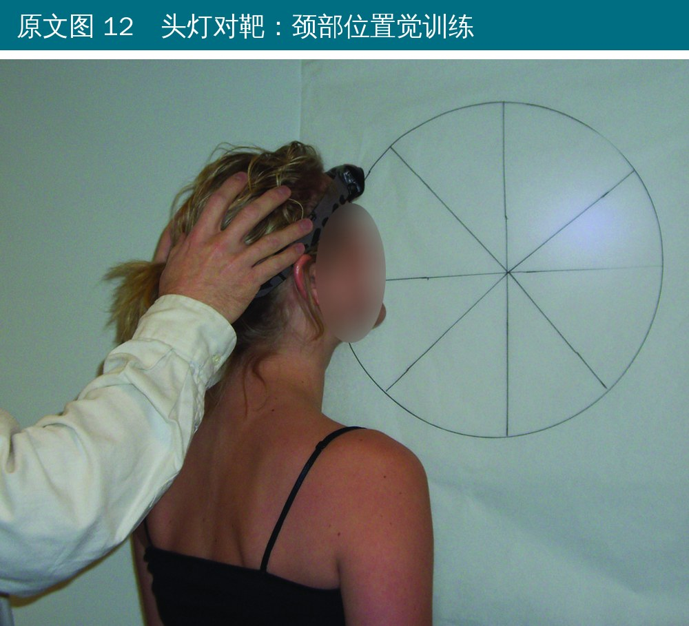
🔖原文图 12 头灯对靶
• 头灯对靶：睁眼时治疗师把头灯对准靶心 → 病人闭眼，治疗师把头往各个方向转几下“打乱方向” → 病人闭着眼自己转回去对准靶心 → 睁眼看偏了多少（像“贴驴尾巴”游戏）
• 进阶：稳定的坐/站 → 不稳的支撑面（球、平衡半球、摇摆板）
• 眼动训练：从头不动开始，到躯干或头动、眼睛盯住目标；再加快速度、加大范围、换背景和目标
• 平衡训练：从稳定面到不稳定面，从双脚到单脚
原文表 2 改善眼动控制的练习
| 练习 |
|---|
| 头不动，用眼睛在墙上“写字”或描图案 |
| 眼和头一起转向同一侧，左右都做 |
| 眼睛先看目标，头再跟上，眼睛始终盯住目标 |
| 眼先动、头再动，在水平或垂直排列的两个目标之间来回看 |
| 移重心或转躯干（被动或主动）时，眼睛盯住目标 |
| 头被动或主动转动时，眼睛盯住目标 |
| 快速移动头和/或眼，再定在目标上指定位置 |
| 眼和头往相反方向移动 |
原文表 3 改善姿势稳定的练习
| 练习 |
|---|
| 坐在不同表面上移重心（凳子、平衡半球、摇摆板、球） |
| 站在不同表面上移重心 |
| 在地面或不稳表面（枕头、泡沫垫、平衡半球、蹦床、摇摆板）上用不同站姿（自然、窄距、前后脚、单脚）保持平衡 |
| 保持平衡同时上肢做各种动作 |
| 保持平衡同时接抛球 |
| 保持平衡同时做眼动或位置觉练习（表 2） |
| 头顶泡沫垫或枕头走路 |
| 边走边屈伸头颈 |
| 边走边转头 |
这些练习都要结合项目特点，加入变速、变向、重心变化；回赛场前，还要逐步加入敏捷和上下肢增强式训练。
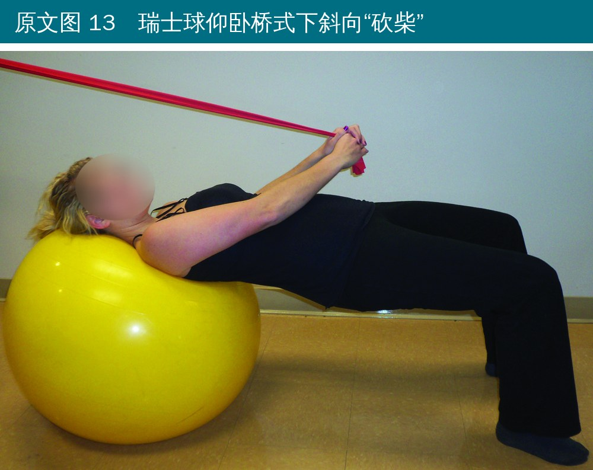
🔖原文图 13 瑞士球仰卧桥式下斜向“砍柴”
躯干/核心训练里也能顺带练颈部耐力：头和肩放在瑞士球上做仰卧桥式，再用拉索或弹力带做斜向“砍柴”，对颈部肌肉的等长挑战更大。无症状、颈部活动度和肌力完全恢复后，可以考虑完全回归。
作者在附录给了一个示范方案，按疼痛和激惹性分三阶段，不按时间推进：
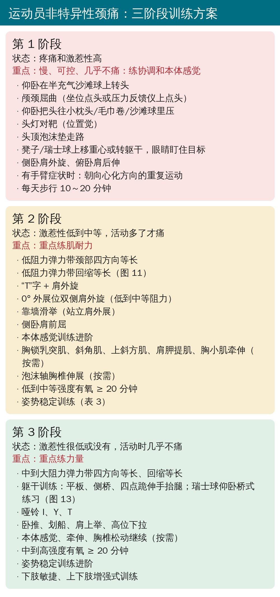
🔖运动员非特异性颈痛三阶段训练方案（编者根据原文附录整理）
• 第 1 阶段（疼痛、激惹性高）：慢、可控、几乎不痛，重点是协调和本体感觉。点头、枕部下压、沙滩球上转头、头灯对靶，加上每天走 10～20 分钟
• 第 2 阶段（激惹性低到中等，活动多了才痛）：重点是肌耐力。低阻力弹力带四方向等长、肩袖和下斜方肌训练、按需牵伸，加 ≥ 20 分钟中低强度有氧
• 第 3 阶段（几乎不痛）：重点是力量。中到大阻力等长、躯干训练、哑铃 I/Y/T、卧推划船下拉，加中高强度有氧和敏捷、增强式训练
• 证据等级低：只检索了 PubMed（截至 2011 年 12 月），推荐大多来自经验或非对照研究；专门针对运动员的随机试验几乎没有
• 很多动作没有给具体剂量（次数、组数、保持时间），需要临床自己定
• 眼动、位置觉训练的证据主要来自挥鞭伤等非运动员人群
• 原文图 6 标题是“颈椎前方深层肌群”，但图里还包括了斜角肌，后者并不属于深层颈屈肌；附录第 1 阶段写点头见“图 5 和图 7”，而图 5 其实是颈椎回缩
• “颈部肌肉提供约 80% 的稳定性”来自较早的离体研究，不宜直接套用到所有人
这篇最实用的是给了一个“先找缺陷、再挑工具、按激惹性分阶段”的框架。颈痛的运动员来了，先问三件事：哪项功能差？现在激惹性多高？他的项目对颈部要求是什么？
激惹性高的，从压力反馈仪点头、枕部下压、头灯对靶这类低强度动作开始；能耐受了，再往弹力带等长、斜方肌训练走；最后根据项目选择耐力还是力量路线——自行车偏耐力，摔跤、橄榄球偏力量，女性运动员多给一点力量训练。
至于剂量，别以为组数越多越好：颈痛人群 1 组和 5 组效果差不多，做到力竭的 1 组可能就够了。
欢迎关注骨科康复小黄公众号，获取更多物理治疗的专业知识！
📄参考文献：
Durall CJ. Therapeutic Exercise for Athletes With Nonspecific Neck Pain: A Current Concepts Review. Sports Health. 2012;4(4):293-301. doi:10.1177/1941738112446138
原文版权归作者及出版方（SAGE）所有，并非知识共享协议开放获取。本文为学术交流用的中文解读，动作照片引自原文（英文字母已改为中文序号），解剖示意图、方案流程卡和表格为编者重绘/翻译，如有侵权请联系删除。